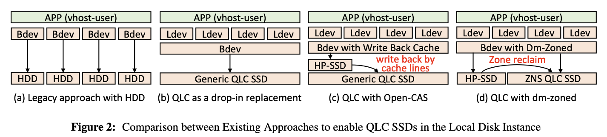
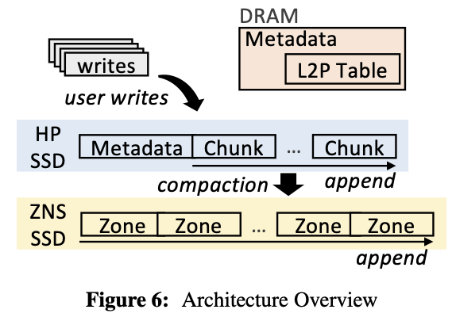
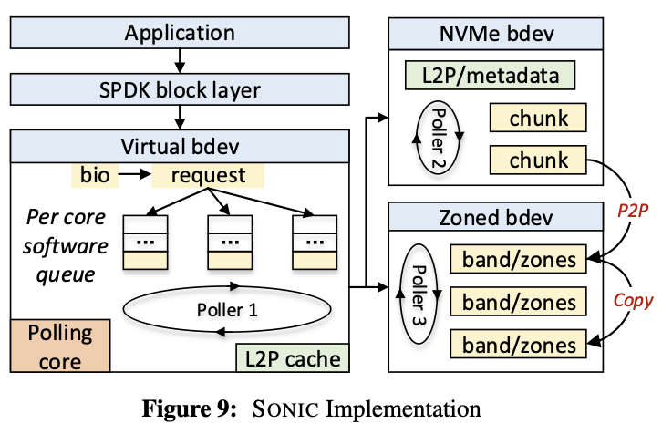

- #84: SONIC: the Next-Gen Local Disks for the Cloud
- Paper summary
- Badge
- Checklist
- Paper summary
- Badge
- Checklist
#84: SONIC: the Next-Gen Local Disks for the Cloud
Problem to solve
vSSDs are the now the bottleneck for scaling and multiplexing VMs. Using local stroage might help, but currently used HDD and NVMe SSD are either too slow or too small. This paper tries to solve this issue using QLC SSD.
The major stepping stone preventing the application QLC SSD is two level write-amplification. They are caused by 1. device-level address mapping and 2. NAND-level garbage collection.

SONIC solves this by organizing NVMe SSD as write buffers for QLC SSD and introducing a two-level logical-physical address mapping.
 
Paper summary
This paper investigates how to utilize tiered NVMe and QLC SSDs to bridge the capacity and performance gap in the local disk offering of the cloud. Existing solution either uses high performance SSDs as a write-back cache or split random and sequential traffic between HP and ZNS QLC SSDs. Both these two solutions are unoptimal. For the write-back cache architecture, the cache has limited capacity and frequent cache flushes bring high device-level write-amplification. For the split design, when HP capacity runs out, data needs to be migrated to the ZNS QLC SSD constantly, wasting bandwidth servering sequential IO, and increasing write-amplification when extra padding is added to align the migrated data to meet ZNS requirement. This paper proposes to utilize HP and QLC SSDs in a LSM-tree like manner, writes are appended to the HP SSDs and later compacted to the QLC SSDs. DRAM keeps the index mapping LBA to PBA. Because the index tracks in 4K granularity, device-level WA is reduced. The garbage collection groups data with similar life-span together, which reduces NAND-level WA.
Badge
It's justified to award both available and functional badge to this artifact. The source code is upstreamed to the SPDK project, which enables future researchers to follow up easily.
The results Reproduced badge cannot be justified. The major claims include raw device performances (figure 10-12 and 14) and write-amplifications (figure 13). I am able to run these benchmarks, but the results I get hugely differs to what is shown in the paper. The authors also did not provide instructions to reproduce the comparison targets. Thank you for providing this assessment for the badge assignment. Based on your feedback, here's the improved wording:
Checklist
Checklists
Artifact Available
- ✔️ This artifact is upstreamed to the spdk project under the folder
spdk/lib/ftl. It's publicly available at the time of evaluation. - ✔️ This artifact has a "read me" file with a reference to the paper.
- ✔️ This artifact uses BSD-3-Clause license, which allow comparison uses.
- ✔️ Artifacts must meet these criteria at the time of evaluation. Promises of future availability, such as artifacts "temporarily" gated behind credentials given to evaluators, are not enough.
Artifact Functional
- ✔️ The artifact has a “read me” file with high-level documentation:
- ✔️ A description, such as which folders correspond to code, benchmarks, data, …
- ✔️ A list of supported environments, including OS, specific hardware if necessary, …
- ✔️ Compilation and running instructions, including dependencies and pre-installation steps, with a reasonable degree of automation such as scripts to download and build exotic dependencies
- ✔️ Configuration instructions, such as selecting IP addresses or disks
- ✔️ Usage instructions, such as analyzing a new data set
- ✔️ Instructions for a “minimal working example”
- ✖️ The artifact has documentation explaining the high-level organization of modules, and code comments explaining non-obvious code, such that other researchers can fully understand it
- ✔️ The artifact contains all components the paper describes using the same terminology as the paper, and no obsolete code/data
- ✔️ If the artifact includes a container/VM, it must also contain a script to create it from scratch
- ✔️ Artifacts must be usable on other machines than the authors’, though they may require hardware such as specific network cards. Information such as IP addresses must not be hardcoded.
Results Reproduced
Fixed by ChatGPT:
Paper summary
This paper explores the utilization of tiered NVMe and QLC SSDs to bridge the capacity and performance gap in cloud-based local disk offerings. Existing solutions either employ high-performance SSDs as a write-back cache or split random and sequential traffic between HP and ZNS QLC SSDs. Both of these approaches have their drawbacks. In the write-back cache architecture, the cache has limited capacity, and frequent cache flushes result in high device-level write amplification. In the split design, when HP capacity is exhausted, data must be constantly migrated to the ZNS QLC SSD, leading to bandwidth wastage in serving sequential IO and increased write amplification when extra padding is added to align the migrated data to zone size. This paper proposes a novel approach that leverages HP and QLC SSDs in a manner akin to LSM-trees. Writes are initially appended to the HP SSDs and later compacted onto the QLC SSDs. DRAM maintains the index mapping LBA to PBA. Since the index tracks data in 4K granularity, device-level write amplification is reduced. The garbage collection process groups data with similar lifespans together, reducing NAND-level write amplification. This paper also discusses how to ensure crash consistency for the proposed design.
Badge
It is justified to award both the "Available" and "Functional" badges to this artifact. The source code has been successfully upstreamed to the SPDK project, which greatly facilitates the work of future researchers.
However, the "Results Reproduced" badge cannot be justified in this case. The major claims in the paper encompass raw device performance (figure 10-12 and 14) and write amplifications (figure 13). While I was able to run these benchmarks, the results obtained significantly deviated from what is presented in the paper. Additionally, the authors did not provide instructions to reproduce the comparison targets, making it challenging to validate these specific claims.
Checklist
Artifact Available
- ✔️ This artifact is upstreamed to the spdk project under the folder
spdk/lib/ftl. It's publicly available at the time of evaluation. - ✔️ This artifact has a "read me" file with a reference to the paper.
- ✔️ This artifact uses BSD-3-Clause license, which allow comparison uses.
- ✔️ Artifacts must meet these criteria at the time of evaluation. Promises of future availability, such as artifacts "temporarily" gated behind credentials given to evaluators, are not enough.
Artifact Functional
- ✔️ The artifact has a “read me” file with high-level documentation:
- ✔️ A description, such as which folders correspond to code, benchmarks, data, …
- ✔️ A list of supported environments, including OS, specific hardware if necessary, …
- ✔️ Compilation and running instructions, including dependencies and pre-installation steps, with a reasonable degree of automation such as scripts to download and build exotic dependencies
- ✔️ Configuration instructions, such as selecting IP addresses or disks
- ✔️ Usage instructions, such as analyzing a new data set
- ✔️ Instructions for a “minimal working example”
- ✖️ The artifact has documentation explaining the high-level organization of modules, and code comments explaining non-obvious code, such that other researchers can fully understand it
- ✔️ The artifact contains all components the paper describes using the same terminology as the paper, and no obsolete code/data
- ✔️ If the artifact includes a container/VM, it must also contain a script to create it from scratch
- ✔️ Artifacts must be usable on other machines than the authors’, though they may require hardware such as specific network cards. Information such as IP addresses must not be hardcoded.